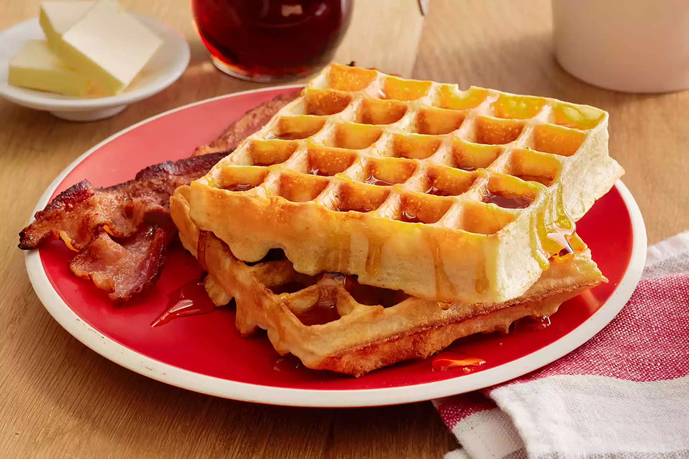

Home
Waffles!

Ingredients
- Eggs: This waffle recipe starts with two whole eggs, whisked until light and fluffy.
- Flour: All-purpose flour adds gluten, which gives the waffles structure. You can also use whole wheat flour.
- Milk: Whole milk lends richness and moisture. Plus, it helps create the ideal batter consistency.
- Oil: A neutral oil, such as vegetable oil, ensures the waffles are nice and moist.
- Sugar: A tablespoon of white sugar adds the perfect amount of sweetness.
- Baking powder: Baking powder acts as a leavener, which means it contributes to the waffles' light and fluffy texture.
- Salt: A pinch of salt enhances the other flavors. Don't skip this step!
- Vanilla A dash of vanilla adds complexity and enhances the overfall flavor.
- Cooking spray: You'll need to spray the iron with nonstick cooking spray before you start making the waffles.
Directions
- Preheat a waffle iron according to manufacturer's instructions.
- Whisk eggs in a large bowl until light and fluffy. Add flour, milk, and vegetable oil and mix to combine. Whisk in sugar, then mix in baking powder, salt, and vanilla just until smooth, being careful not to overmix.
- Spray the preheated waffle iron with nonstick spray. Pour batter onto into the hot waffle iron and cook until golden brown and the iron stops steaming, 3 to 5 minutes. Repeat to cook remaining waffles.
Nutrition Facts
- Calories: 382
- Fat: 22g
- Carbs: 38g
- Protein: 9g
Home